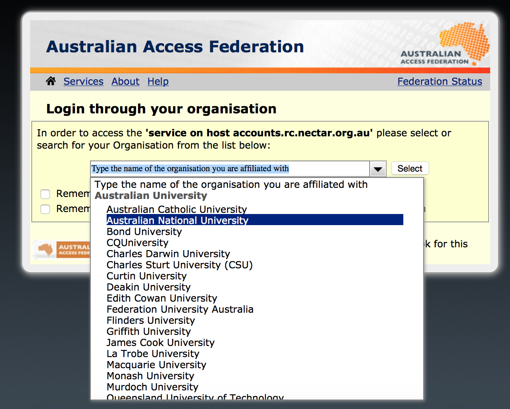
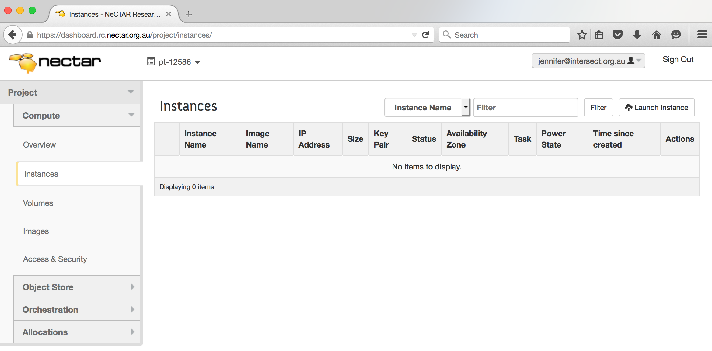
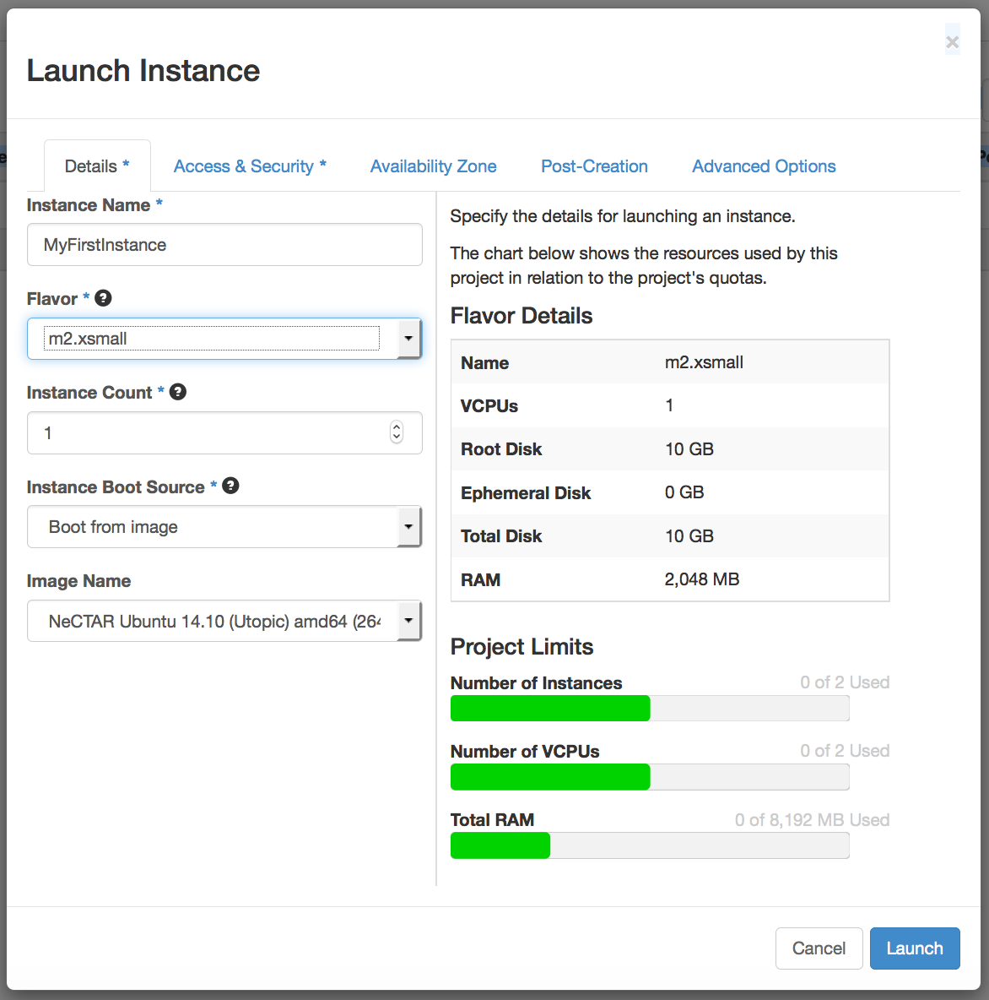
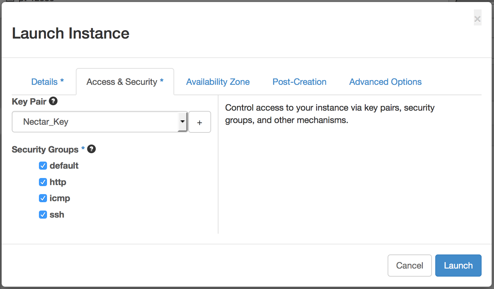
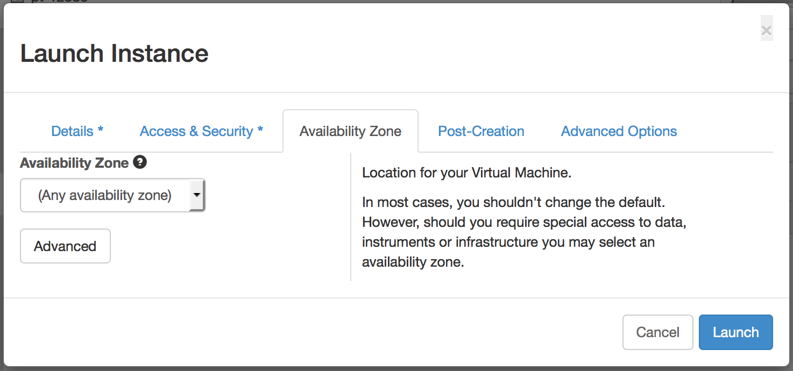

Module 7
Launching and Connecting
Sections of this module:
IntroductionCreate a ssh key
Launching an instance
Connect to the instance
Configuration and control
Connect to a remote desktop
Graphical Interfaces on the ssh terminal
Install a web server
Managing storage
Summary
Appendix
View all sections on one page (Printer friendly)
Launching an instance
We will now create an instance and choose the resources we require. For this tutorial, we don’t need a lot of resources. You may require more for your research. For more details about how to request an allocation, see Module 5.
Security note
Before we start, a brief note about security: It is important that we make our instance secure from the very moment we create it. In order to enable the right security settings, we will select the instance to be part of one or several “security groups”.

A Security Group opens up access to the instance from outside. Essentially, a security group is a collection of firewall rules, which open up different Ports to access the machine from outside.
Module 5 has already introduced the concept of Ports. Now we need to free up some Ports in order to be able to communicate with our instance. For example, we will first connect to our instance with a SSH shell from our terminal (Reminder: SSH encrypts our communication with the server). SSH uses Port number 22, so this has to be freed up.

Note: All the pre-defined security groups mentioned in the instructions are available in Project Trials only. To learn how to create your own security group (or re-create the trial groups), refer to the Appendix of this module.
The following steps will explain how to create an instance and how to make sure it has been assigned to the security groups we need to connect to it.
Step 1: Logging on
First, we will have to log on to the Dashboard, which is our interface for managing our virtual machines. The Dashboard can be accessed with any browser, e.g. Firefox, Safari or Windows Internet Explorer. Open your browser of choice (we suggest Firefox), and go to:
https://dashboard.rc.nectar.org.au/

Click “Log in” on the first window. Then, select your organisation from the drop-down menu (you may also type in the first characters of your organisation name in order to find it quicker). You will be redirected to a page where you can type in your username and password. This should in most cases be the username and password you usually use to access your account at your University or Research Organisation.
Click OK for all terms and conditions if logging in the first time (you will not have to do this every time).
Step 2: Open the Launch Dialogue
Go to Dashboard > Instances. A list of your running instances will be listed. If this is the first time you are doing this, the list will be empty. Now click on Launch instance on the top right of the overview.

Step 3: Selecting resources

Choose the name of your instance and the “flavor”. Different flavors allocate different amounts of memory and disk space for you. Select the flavors in the drop-down box and information about the resources are displayed on the right side of the window. You may select a few flavors to see the differences between the flavors. For this tutorial, choose the flavor “m1.small”, which offers 30GB of ephemeral storage (we will need this in a later section.
You could launch several instances of the same flavor, but for now we will launch only 1, so leave “Instance Count” at 1. Leave “Instance Boot Source” on “Boot from Image”. Choose the most recent version of “NeCTAR Ubuntu” from the “Image name” list.

NOTE: At the time of writing the image “NeCTAR Ubuntu 14.10 (Utopic) amd64” was used. If you choose a version much newer than this, there may be some differences to the descriptions given in this tutorial. In general, a newer version should work fine with the exercises below, you may only see different text (phrasing) in the terminals command line output.
Don’t click “Launch” just yet… we have to set the security settings first!
Step 4: Ensuring security
Now, we will choose the security settings. Go to the tab “Access & Security”.
We can choose which Security Groups the instance will belong to (see above for explanation about security groups).
We will connect to the instance with ssh. Ssh uses port number 22, so this has to be freed up. Therefore, tick the “ssh” box. We will also publish a little website in a later exercise, which requires http, so tick the “http” box also. To test whether your instance is reachable, we will also need “icmp”.
Note: We can also change the security groups of the instance later on, but it’s convenient to do this now.
Next, we will specify the key for connecting to this instance (that’s the one we just generated).

-
You should have the contents of your public key still in your clipboard, unless you have copied and pasted something else since we did this above. If you have, copy the contents of Nectar_Key.pub again.
-
Click on the plus (“+”) to add a new key.
-
Specify the Key Pair Name. This can be any name, but for simplicity choose Nectar_Key also.
-
Paste the contents into the large text box labelled Public Key (use CTRL+V, or right click in the box and “Paste”).
-
Now, click “Import key pair”. This key will now be available for future use. Next time you launch an instance you can select this key from the drop-down list directly, without having to copy and paste it again. The window closes and you are back to the window to configure your instance.
Step 5 (optional): Choose your Availability zone
 If you need access to specific facilities (e.g. Volume storage), you can manually choose the location of your instance in the “Availability Zone” tab. The Availability Zone is where your instance will be running physically. Unless you know that you need access to specific services, it is recommended to leave this in the default setting, because then the location with the most available resources is chosen.
Step 5: Launching the instance
You can now launch the instance by clicking on the “Launch” button. You will get back to the overview of your instances. You will see the status of your instance in the overview. You need to wait a few minutes.
The Instance will normally pass from Status “Build” to “Active”. You will see an IP address for your instance (4 numbers separated by a dot). Write it down, or keep this window open so you can see it, as we will need it in the next step to connect to your instance.
Congratulations!!
Your instance is now reachable on this IP address. Your applications can connect to the Ports that you have allowed earlier in the Security Groups.

 This work is licensed under a
This work is licensed under a